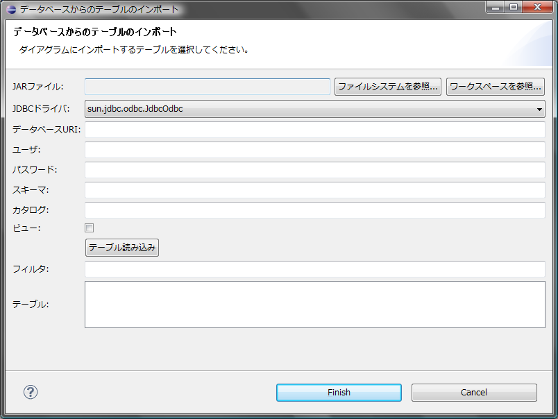
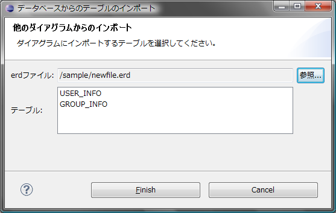

データベース上のテーブル、他のダイアグラムで定義されているテーブルをインポートすることができます。 すでにダイアグラム上に存在するテーブルをインポートした場合、変更点のみがインポートされます。 これによってDBを直接変更して、差分をダイアグラムに取り込むといった使い方が可能になります。


他のダイアグラムからインポートされたテーブルはリンクテーブルという特殊なテーブルとして扱われます。
リンクテーブルはインポート先のダイアグラム上では編集することはできず、DDLなどの生成対象にも含まれません。 巨大なデータベースを複数のダイアグラムに分割するような場合に、 外部キー制約をはるために別のダイアグラムのテーブルを参照する必要があるといった場合に使用することを想定しています。